Prusa i3 (MK2 parts, 2020 frame) — build guide
One step per picture. The orange numbers in each picture match the numbers in the parts table of that step. Coloured parts are new in that step; they are pulled out along the direction in which you fit them, and dashed lines show where they go. Transparent grey parts were fitted in earlier steps. Steps 12, 13, 16 and 17 are done on the bench.
Corner brackets: 8 are used (4 base, 2 upright rear faces, 2 under the top bar). No other joint has a free 90° corner, so keep the other brackets as spares.
T-nuts: your T-nuts are the drop-in type (6 × 10 mm, M4): put them into the slot from the top at any time. Approximate number per bar:
| Each side bar | top slot: upright bracket 1, Z-bottom 2, brace gusset area 3 (outer slot); bottom slot: foot 2; right bar outer slot: power supply 2, MOS module 2 |
| Front bar | top slot: rod clamps 4, Y idler holder 2 |
| Rear bar | top slot: rod clamps 4, Y motor mount 2; front slot: Y motor mount 2 |
| Each upright | front face: Z-bottom 2, Z top 2, endstop 1; rear face: bracket 1, T-plate 2; outer face: gusset 3; inner face: top bracket 1 |
| Top bar | bottom face: brackets 2; rear face: T-plates 2 |
| Each brace | outer face: gussets 2 |
1Base frame
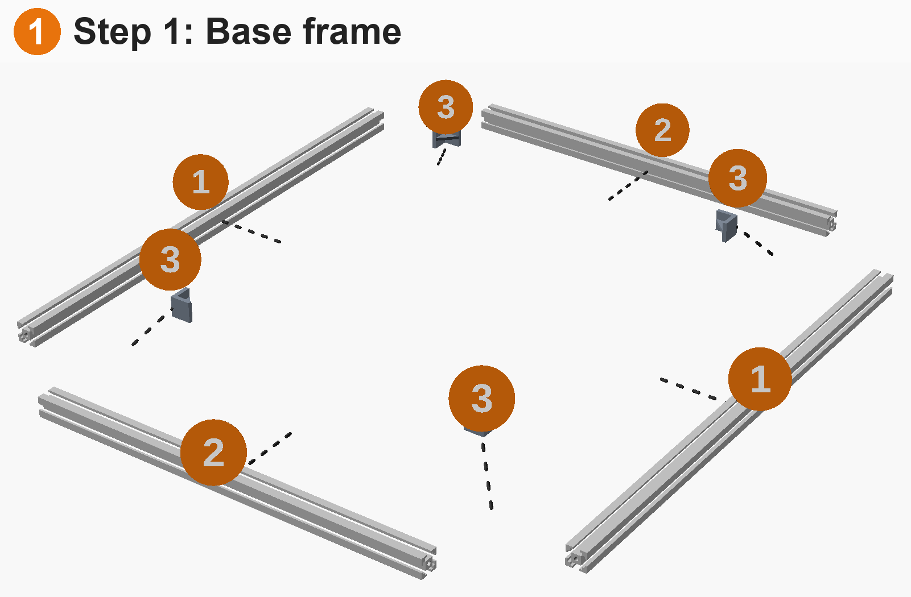
| New part | Qty | Where |
|---|---|---|
| 1 2020 bar 520 mm (side) | 2 | |
| 2 2020 bar 400 mm (front, rear) | 2 | |
| 3 Corner bracket | 4 | inside each corner |
Hardware: 8 × M4×10 + washer, 8 × M4 T-nut
- The front and rear bars go between the side bars.
- Your T-nuts are the drop-in type: put one into the slot from the top, then turn the screw; the nut turns 90° and locks. You can add them at any time.
- Fit 1 corner bracket in each inside corner. Tighten lightly.
- Put the frame on a flat table. Measure both diagonals; they must be equal (±1 mm). Then tighten.
2Feet
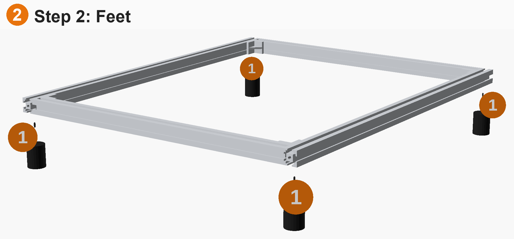
| New part | Qty | Where |
|---|---|---|
| 1 Rubber foot Penn-Elcom F1697 | 4 | under the side-bar ends |
Hardware: 4 × M4×16 or M4×25 (test which fits, see the check) + washer, 4 × M4 T-nut (bottom slot)
- Fit one foot under each end of the side bars.
- Check: 4–6 mm of the screw must come out of the top of the foot. If more, use the shorter screw or add a washer.
3Uprights
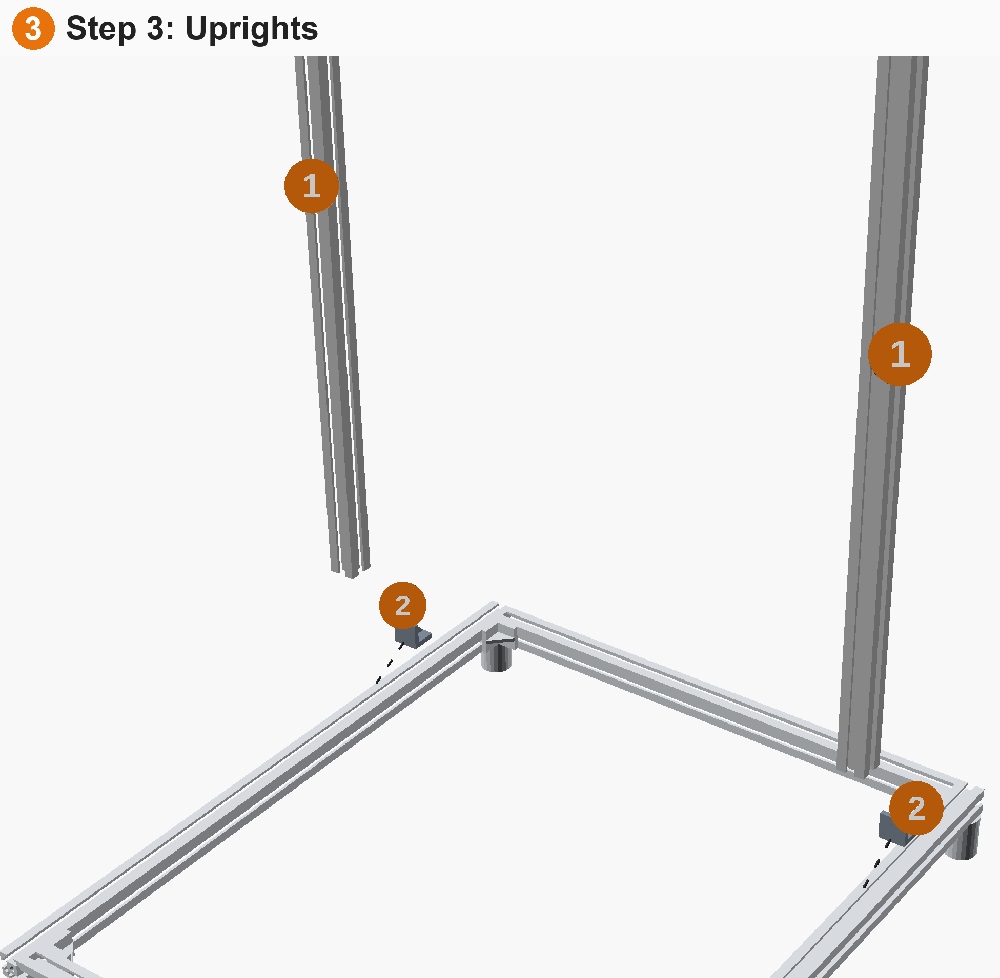
| New part | Qty | Where |
|---|---|---|
| 1 2020 bar 520 mm (upright) | 2 | |
| 2 Corner bracket | 2 | rear face, at the bottom |
Hardware: 4 × M4×10 + washer, 4 × M4 T-nut
- Stand each upright on its side bar. The front face of the upright is 335 mm from the front end of the side bar.
- Fit 1 corner bracket on the rear face. The front face has no bracket: the Z motor (step 6) is there.
- Check with a square that each upright is vertical. The braces (step 5) make it stiff.
4Top bar
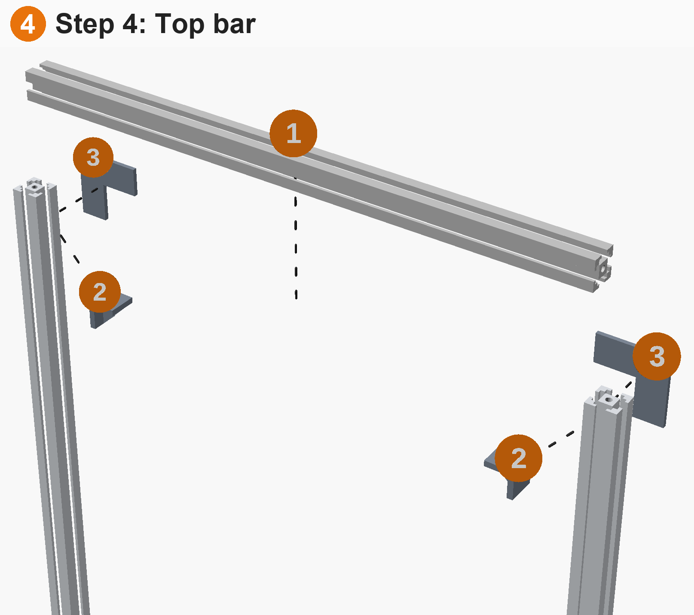
| New part | Qty | Where |
|---|---|---|
| 1 2020 bar 400 mm (top) | 1 | between the uprights |
| 2 Corner bracket | 2 | under the top bar |
| 3 T-shape joining plate | 2 | rear face |
Hardware: 8–10 × M4×10 + washer, 8–10 × M4 T-nut
- Fit the top bar between the tops of the uprights.
- Fit 1 corner bracket under each end and 1 T-plate on each rear corner.
- Check that the distance between the uprights is the same at the top and at the bottom.
5Diagonal braces
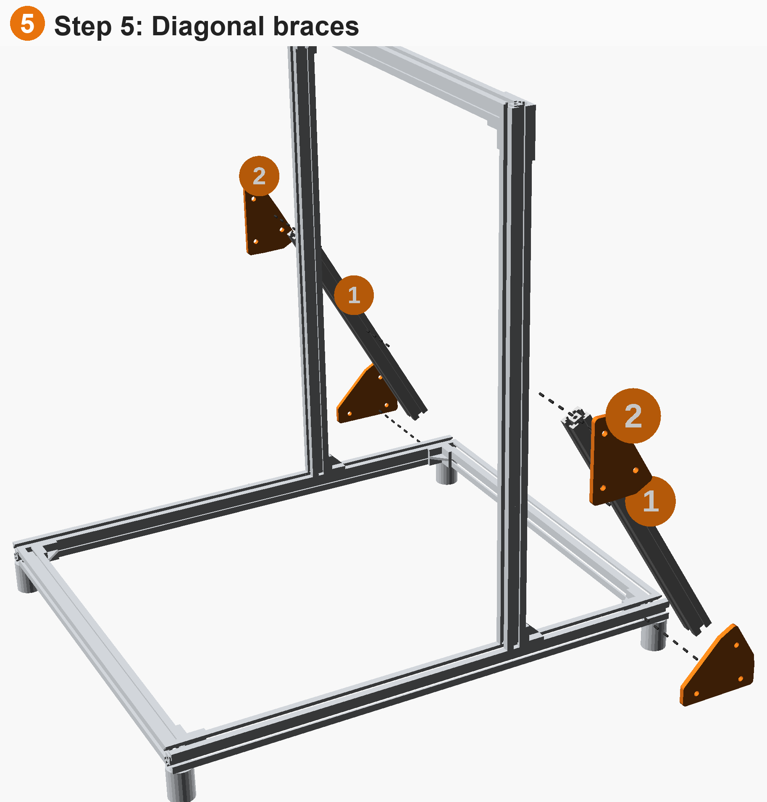
| New part | Qty | Where |
|---|---|---|
| 1 2020 bar 290 mm (brace) | 2 | |
| 2 Brace gusset top / bottom (printed 24, 25) | 2 + 2 | outer faces |
Hardware: 12 × M4×12 + washer, 12 × M4 T-nut
- Fit each brace in line with its side: top end on the upright, bottom end on the side bar.
- Fix both ends with the printed gussets on the outer face.
- Check again that the uprights are vertical before you tighten.
6Z-bottom parts and Z motors
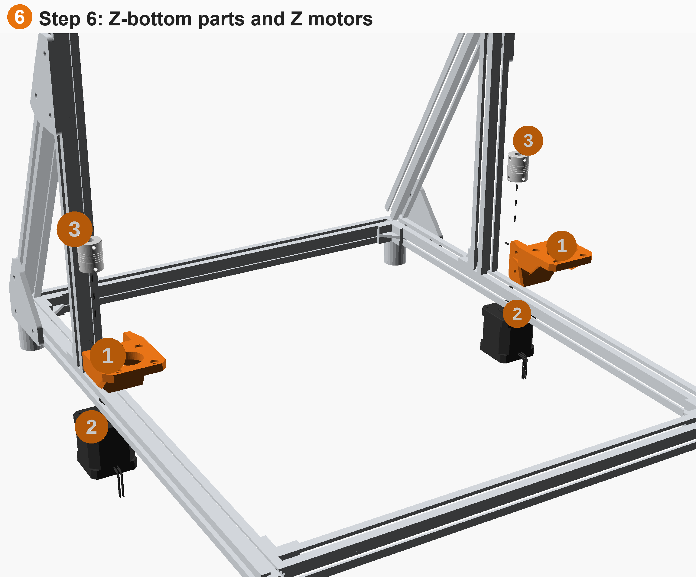
| New part | Qty | Where |
|---|---|---|
| 1 Z bottom left / right (printed 08, 09) | 1 + 1 | |
| 2 NEMA17 motor | 2 | below the Z-bottom |
| 3 Flexible coupler 5–8 mm | 2 | on the motor shaft |
Hardware: 8 × M3×10 (motors), 4 × M4×12 + washer + T-nut (Z-bottoms)
- Fit each Z-bottom on the front of its upright, 17 mm above the side bar (the 47 mm motor body must clear the bar by approx. 3 mm).
- Fit each motor under its Z-bottom with 4 × M3×10.
- Push the coupler on the shaft, 5 mm end down. Tighten the lower grub screws only.
7Y rods
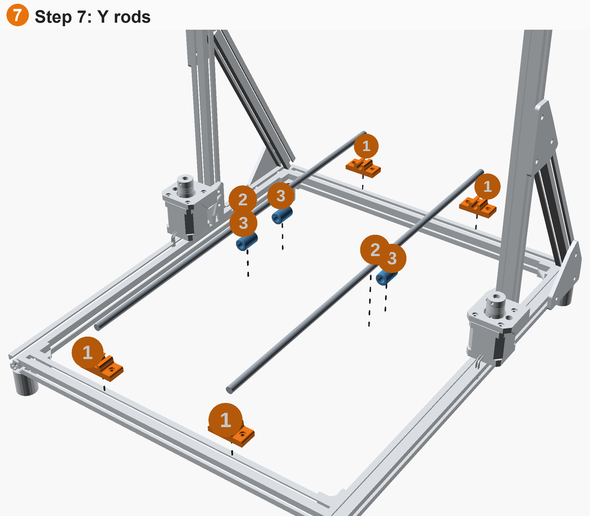
| New part | Qty | Where |
|---|---|---|
| 1 Y rod clamp (printed 15) | 4 | top slots of front and rear bars |
| 2 8 mm rod 500 mm | 2 | |
| 3 LM8UU | 3 | 2 on the left rod, 1 on the right rod |
Hardware: 8 × M4×12 + washer, 8 × M4 T-nut
- First slide the 3 LM8UU bearings onto the rods: 2 on the left rod, 1 on the right rod.
- Fit the clamps at X = ±85 mm from the centre of the frame (rods 170 mm apart).
- Check that the rods are parallel (same distance at the front and at the rear) and at the same height.
8Y motor and Y idler
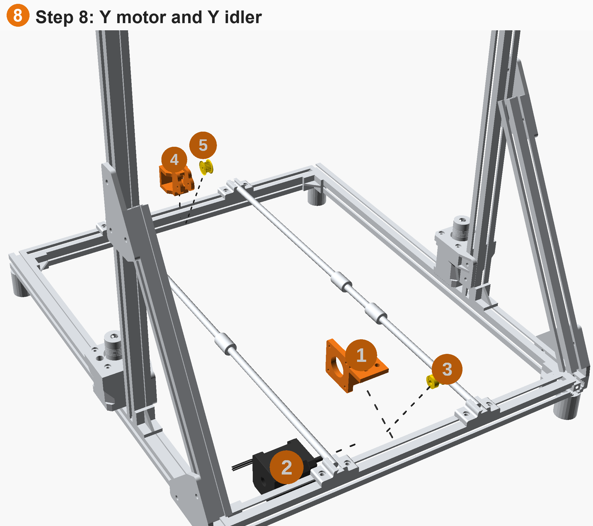
| New part | Qty | Where |
|---|---|---|
| 1 Y motor mount (printed 11) | 1 | rear bar |
| 2 NEMA17 motor | 1 | |
| 3 GT2 20T pulley | 1 | |
| 4 Y idler holder (printed 12) | 1 | front bar |
| 5 GT2 idler, 3 mm bore | 1 |
Hardware: 4 × M3×10 (motor), 4 × M4×12 + washer + T-nut, 1 × M3×25 + nut (idler axle)
- Fit the Y motor mount on the rear bar, centred: 2 screws in the front slot, 2 in the top slot.
- Fit the motor with 4 × M3×10. Put the pulley on the shaft in line with the centre of the frame.
- Fit the idler holder on the front bar, centred, and the idler on its M3 axle.
9Y carriage
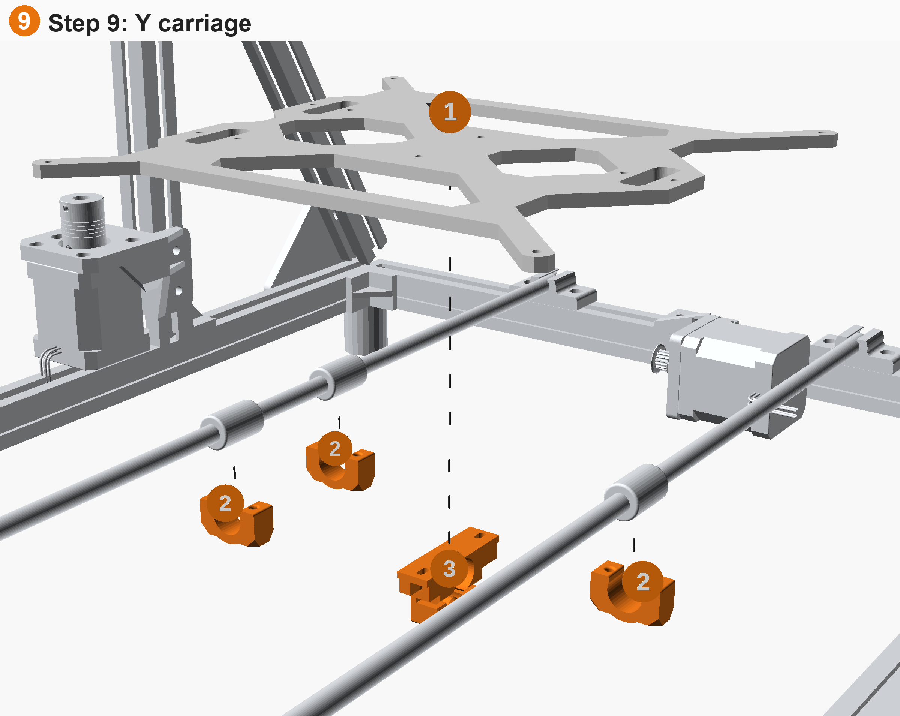
| New part | Qty | Where |
|---|---|---|
| 1 Y carriage (printed 27) | 1 | on top of the bearings |
| 2 Y bearing holder (printed 14) | 3 | under the bearings |
| 3 Y belt holder (printed 13) | 1 | under the centre |
Hardware: 6 × M3×16 + nuts (bearing holders), 2 × M3×16 + nuts (belt holder)
- Put the carriage on the 3 bearings.
- Clamp each bearing from below with a bearing holder (2 screws each).
- Fit the belt holder under the centre of the carriage.
- Move the carriage by hand: it must slide freely along the full length.
10Y belt
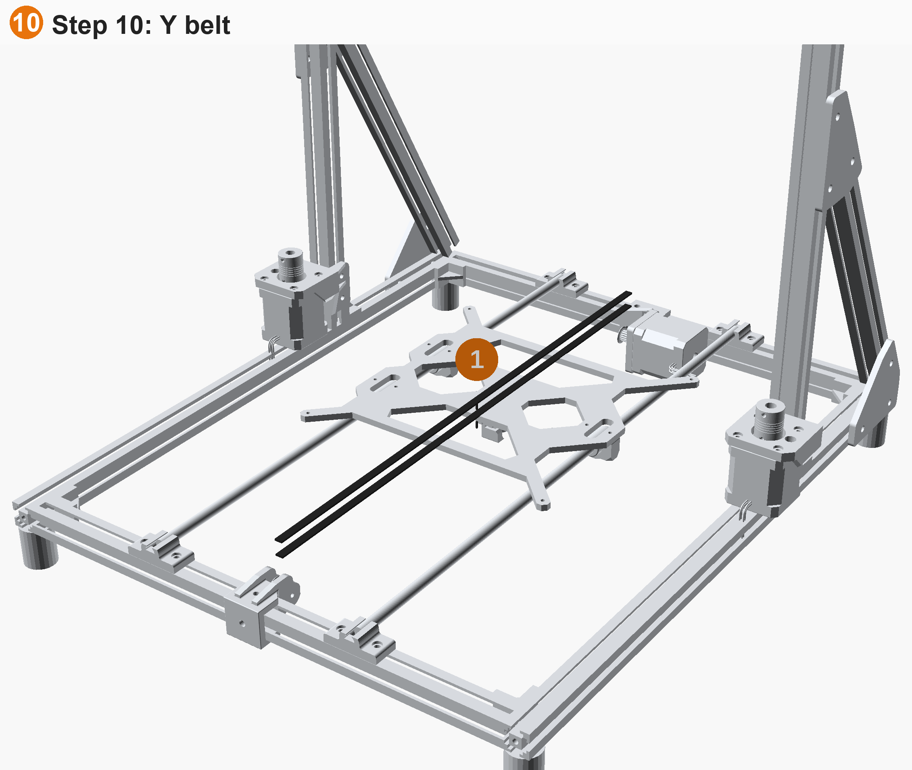
| New part | Qty | Where |
|---|---|---|
| 1 GT2 belt | 1 | approx. 1 m |
Hardware: zip ties
- Clamp one belt end in the belt holder.
- Route the belt around the front idler, then to the rear motor pulley, then back to the belt holder.
- Pull it tight (it must sound like a low note when you pluck it) and clamp the other end.
11Heatbed
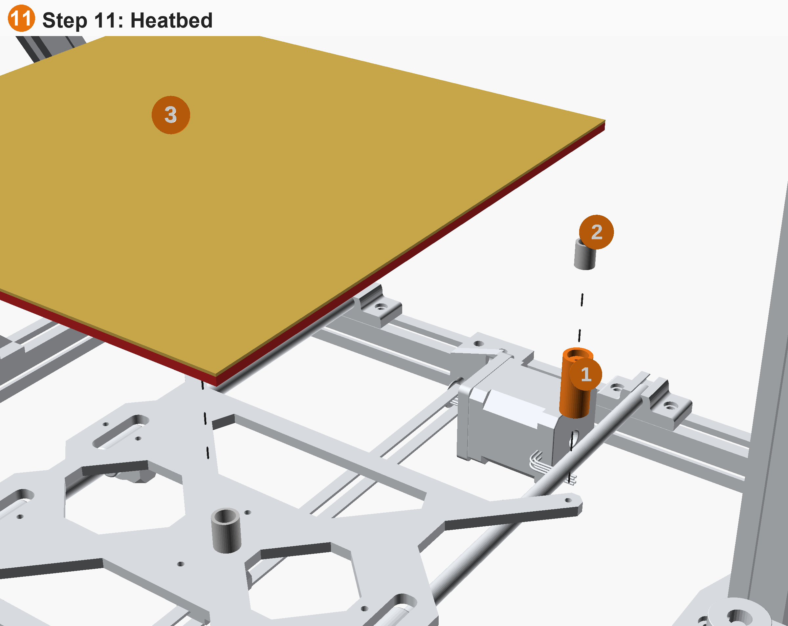
| New part | Qty | Where |
|---|---|---|
| 1 Bed spacer (printed 16) | 4 | on the carriage corners |
| 2 Bed spring | 4 | |
| 3 Heatbed MK2 214 mm | 1 |
Hardware: 4 × M3×50 + nyloc nuts (from the top, through bed, spring, spacer, carriage)
- Put a spacer on each corner hole of the carriage and a spring on each spacer.
- Put the heatbed on the springs and fit the 4 screws from the top.
- Tighten until each spring is compressed by approx. half. You level the bed later.
12X-ends (on the bench)
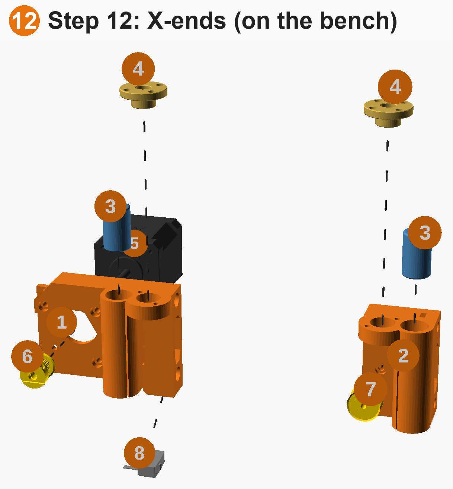
| New part | Qty | Where |
|---|---|---|
| 1 X-end motor (printed 01) | 1 | |
| 2 X-end idler (printed 02) | 1 | |
| 3 LM8UU | 2 | one in each X-end |
| 4 T8 brass nut | 2 | top of each X-end |
| 5 NEMA17 motor | 1 | X motor |
| 6 GT2 20T pulley | 1 | |
| 7 GT2 idler, 3 mm bore | 1 | |
| 8 Micro switch (X endstop) | 1 |
Hardware: 4 × M3×10 (motor), 4–8 × M3×10 (T8 nuts), 1 × M3×30 + nut (idler axle), 2 × M2/M3 (switch)
- Push one LM8UU into the bearing hole of each X-end (from the top), with zip ties.
- Fit a T8 brass nut on top of each X-end: flange in the recess, screws into the holes.
- Fit the X motor on the X-end motor with 4 screws, and the pulley on its shaft.
- Fit the idler in the X-end idler on its M3 axle, and the micro switch on the X-end motor.
13X axis (on the bench)
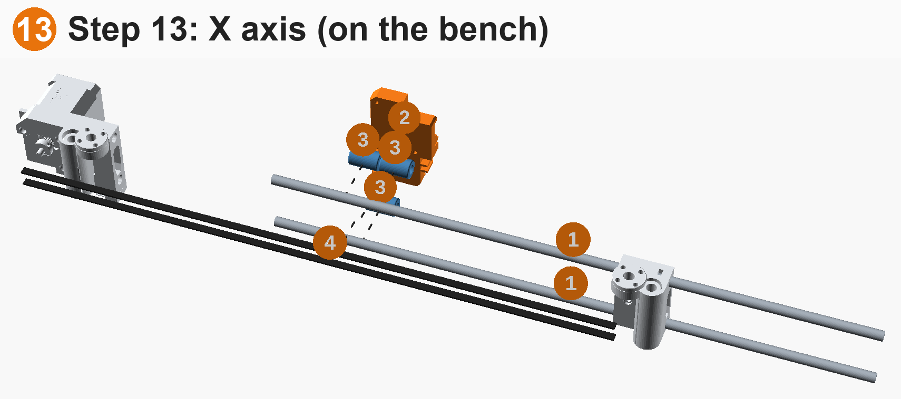
| New part | Qty | Where |
|---|---|---|
| 1 8 mm rod 471 mm (cut) | 2 | |
| 2 X carriage (printed 03) | 1 | |
| 3 LM8UU | 3 | 2 on the top rod, 1 on the bottom rod |
| 4 GT2 belt | 1 | approx. 1 m |
Hardware: zip ties, M3 square nuts in the carriage slots
- Push the 3 bearings into the carriage and fix them with zip ties.
- Slide the 2 rods through the carriage bearings, then push the rod ends fully into both X-ends.
- Fix one belt end on the carriage, route it around the motor pulley and the idler, and back to the carriage. Tension it.
14Fit the X axis
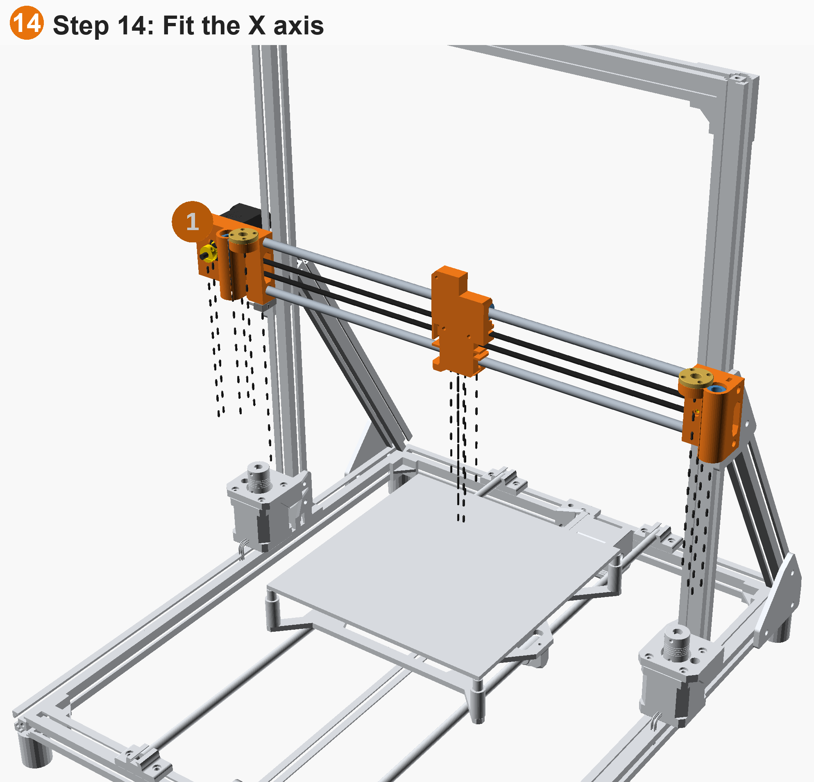
| New part | Qty | Where |
|---|---|---|
| 1 Complete X axis from steps 12–13 | 1 |
Hardware: –
- Lower the X axis between the uprights.
- Line up each X-end bearing over the rod hole of its Z-bottom, and each T8 nut over its coupler. Support the X axis on blocks.
15Z rods and lead screws
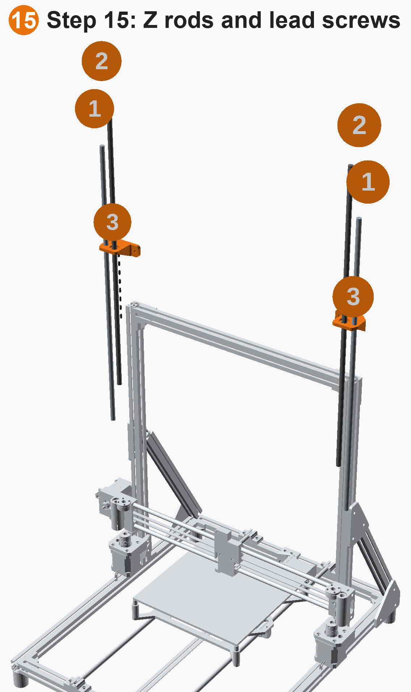
| New part | Qty | Where |
|---|---|---|
| 1 8 mm rod 500 mm | 2 | |
| 2 T8 lead screw 500 mm | 2 | |
| 3 Z top (printed 10) | 2 |
Hardware: 4 × M4×12 + washer + T-nut (Z tops)
- Slide each Z rod down from the top through the X-end bearing into the Z-bottom.
- Turn each lead screw down through its T8 nut into the coupler. Tighten the upper grub screws.
- Fit the Z tops on the top of the rods and bolt them to the uprights. The top of the lead screw stays free.
- Turn both lead screws by hand until the X axis is level (same height left and right).
16Extruder drive (on the X carriage)
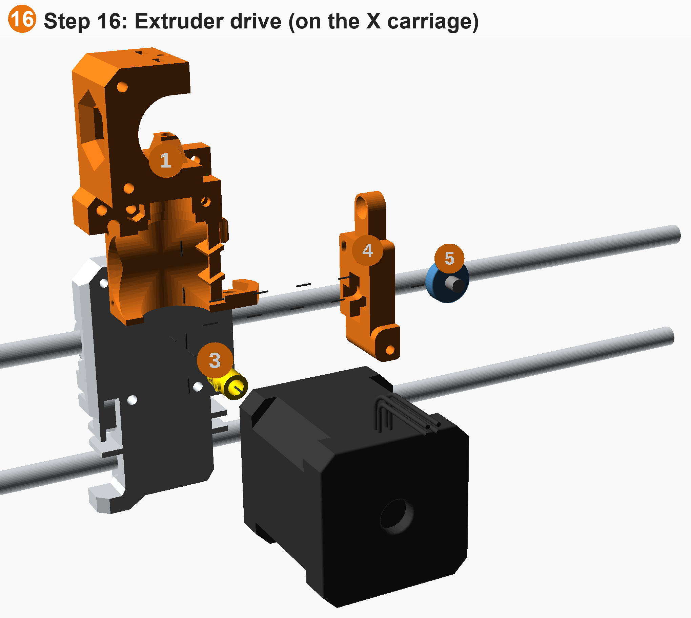
| New part | Qty | Where |
|---|---|---|
| 1 Extruder body (printed 04) | 1 | |
| 2 NEMA17 motor (your shortest) | 1 | |
| 3 MK8 drive gear | 1 | |
| 4 Extruder idler (printed 06) | 1 | |
| 5 625 bearing + 5×16 pin (M5×16) | 1 |
Hardware: 3 × M3 (motor), 2 × M3×40 + springs (idler tension), M5 nyloc (pin)
- Fit the motor on the extruder body with 3 screws (the idler arm needs the 4th corner).
- Fit the MK8 gear on the shaft so that its groove lines up with the filament path.
- Fit the 625 bearing in the idler on the pin, then the idler with its 2 tension screws and springs.
- Bolt the extruder body to the X carriage.
17Hotend and fans
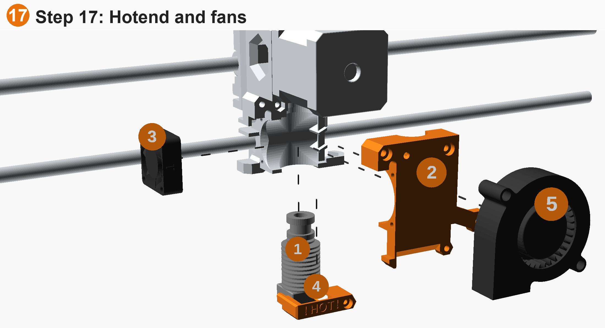
| New part | Qty | Where |
|---|---|---|
| 1 E3D V6 hotend | 1 | |
| 2 Extruder cover (printed 05) | 1 | clamps the hotend |
| 3 30 mm fan | 1 | hotend fan |
| 4 Fan nozzle (printed 07) | 1 | |
| 5 5015 blower | 1 | part cooling |
Hardware: M3 screws from the M3×25 set, square nuts
- Cut the PTFE tube in the hotend flush with the top of the heatsink.
- Put the hotend groove into the extruder body and clamp it with the cover.
- Fit the 30 mm fan on the heatsink side, and the 5015 blower with the fan nozzle.
18Electronics
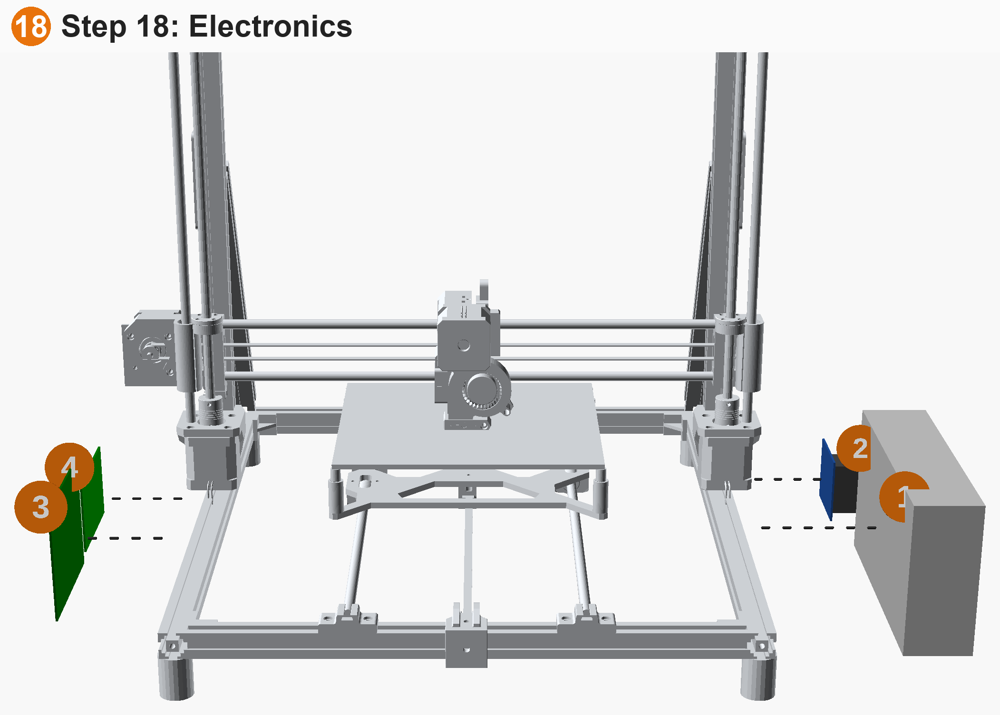
| New part | Qty | Where |
|---|---|---|
| 1 Power supply 12 V 15 A | 1 | right side |
| 2 Heatbed MOS module | 1 | right side, behind the PSU |
| 3 MKS Gen L | 1 | left side |
| 4 Raspberry Pi 3B+ | 1 | left side |
Hardware: M4×10 + washer + T-nut, M3 standoffs for the boards, cable ties
- Fit the power supply on the outside of the right side bar, and the board and Pi on the left.
- Fit the MOS module on the right side bar, between the power supply and the Z motor. The bed current (approx. 11 A) then uses short wires from the power supply.
- Do not connect power yet. Wiring and the Klipper configuration come next.
19Complete printer: checks
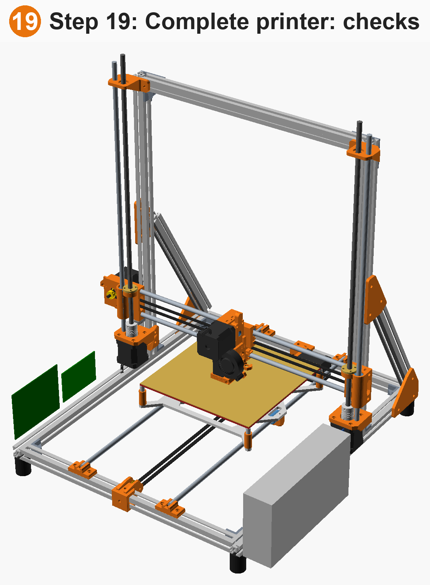
Hardware: –
- Move each axis by hand: X, Y and Z must move smoothly over the full length.
- Belts tight, all grub screws tight, all frame screws tight.
- Z: both sides at the same height. Bed: approximately level with the nozzle path.